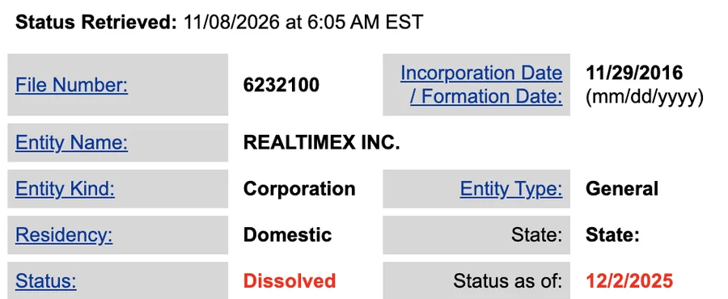
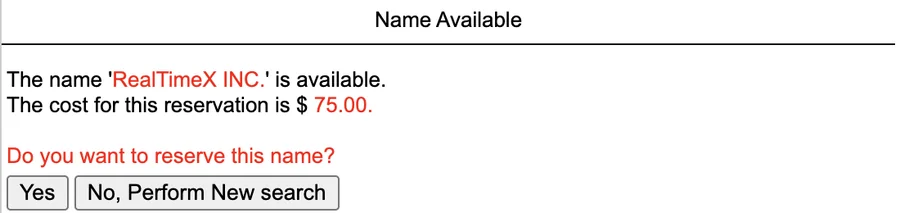
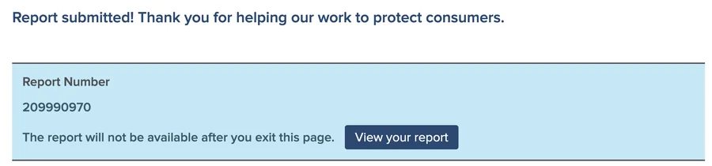

Viet Nam–Bay Area Business Forum 2026 · Trung LeDiễn đàn Doanh nghiệp Việt Nam–Vùng Vịnh 2026 · Lê Trung
We don't talk about AI. We run on it.Chúng tôi không bàn về AI. Chúng tôi vận hành bằng AI.
Not what AI could do someday. What our agents actually did in the last few weeks, building our product, serving clients in Vietnam and setting up our U.S. company, with the records to prove it.Không phải AI một ngày nào đó có thể làm gì, mà là những việc các agent của chúng tôi đã thực sự làm trong vài tuần qua: phát triển sản phẩm, phục vụ khách hàng tại Việt Nam và thành lập công ty tại Mỹ. Có số liệu và hồ sơ kèm theo.
71%
of product code changes co-written by AI, last 90 daysthay đổi mã nguồn có AI cùng viết, 90 ngày qua
1h44m
from go-live to an AI salesperson's first real ordertừ lúc chạy thật đến đơn hàng đầu tiên do AI tạo
13 daysngày
from a team of agents to a Delaware corporationtừ đội agent đến công ty Delaware
Numbers as of November 14, 2026, from our own records. Client names withheld.Số liệu tính đến 14/11/2026, lấy từ hồ sơ nội bộ. Không nêu tên khách hàng.
Agents do the work. People own the decisions.Agent làm việc. Con người quyết định.
Every story below follows the same split.Mọi câu chuyện bên dưới đều theo cùng một cách phân vai.
AgentsAgent
Research, draft, write code
Fill in forms, check documents
Answer customers in seconds, day and night
Review each other's work
Follow up without being reminded
Nghiên cứu, soạn thảo, viết code
Điền biểu mẫu, rà soát giấy tờ
Trả lời khách trong vài giây, cả ngày lẫn đêm
Kiểm tra chéo công việc của nhau
Tự theo dõi và nhắc việc
PeopleCon người
Sign and pay
Set prices and approve contracts
Approve every code merge
Handle upset customers
Make the final call
Ký và thanh toán
Định giá, duyệt hợp đồng
Duyệt mọi lần đưa code vào sản phẩm
Xử lý khách hàng không hài lòng
Ra quyết định cuối cùng
Seven stories, with the recordsBảy câu chuyện, có hồ sơ
Tap a story to open it.Chạm vào từng câu chuyện để xem chi tiết.
01
RealTimeX builds itselfRealTimeX tự xây dựng chính mình
Three core engineers, 1,019 approved changes in 90 days.Ba kỹ sư chính, 1.019 thay đổi được duyệt trong 90 ngày.
›
Share of commits to our main product that list an AI co-author, by month:Tỷ lệ commit vào sản phẩm chính có AI đồng tác giả, theo tháng:
Bright bars: October and November 1–14. Tap a bar for counts.Cột đậm: tháng 10 và 1–14/11. Chạm vào cột để xem số liệu.
Show as tableXem dạng bảng
6,3276.327commits in 90 dayscommit trong 90 ngày
1,0191.019merge requests, each approved by a named engineeryêu cầu hợp nhất, mỗi yêu cầu do một kỹ sư có tên duyệt
~36hfor one feature: first line of code to merged, 52 of 52 commits AI co-writtencho một tính năng: từ dòng code đầu tiên đến khi hợp nhất, 52/52 commit có AI cùng viết
Agents plan, write, test and open the change. A person reviews and merges. RealTimeX also checks itself: a monitor compares what the system says it does with what actually happened.Agent lập kế hoạch, viết code, kiểm thử và gửi thay đổi. Con người rà soát và hợp nhất. RealTimeX còn tự kiểm tra chính mình: một hệ thống giám sát so sánh những gì hệ thống tuyên bố với những gì thực sự diễn ra.
Where a person decidedCon người quyết định ở đâuAll 1,019 merges were approved by one of our engineers.Cả 1.019 lần hợp nhất đều do kỹ sư của chúng tôi duyệt.
How we counted: git history, non-merge commits on all branches whose message lists an AI co-author. The tag shows AI took part, not how much it wrote. Earlier AI use often left no tag.Cách đếm: lịch sử git, commit không phải merge trên mọi nhánh có ghi AI đồng tác giả. Nhãn này cho biết AI có tham gia, không cho biết AI viết bao nhiêu. Việc dùng AI trước đây thường không được gắn nhãn.
02
An AI salesperson's first eveningBuổi tối đầu tiên của nhân viên bán hàng AI
A lingerie brand in Vietnam: live at 5:27 PM, first real order at 7:11 PM.Một thương hiệu đồ lót tại Việt Nam: chạy thật lúc 17:27, đơn hàng thật đầu tiên lúc 19:11.
›
The AI salesperson answers the brand's Facebook page, quotes live prices and stock from the shop's sales system, and creates orders. Anything it doesn't know goes to staff.Nhân viên bán hàng AI trả lời fanpage của thương hiệu, báo giá và tồn kho trực tiếp từ hệ thống bán hàng, và tự lên đơn. Câu hỏi nào chưa biết thì chuyển cho nhân viên.
Our sales director approves go-liveGiám đốc kinh doanh duyệt cho chạy thật
Real customers start chatting with the AIKhách thật bắt đầu chat với AI
3 questions it couldn't answer go to staff, and the answers are added to its knowledge3 câu hỏi AI chưa trả lời được chuyển cho nhân viên, câu trả lời được nạp vào kiến thức
First order created by the AI in the shop's sales systemĐơn đầu tiên do AI tạo trong hệ thống bán hàng
The brand's team marks the AI as passing on all 11 of their criteriaĐội ngũ thương hiệu chấm AI đạt cả 11 tiêu chí
63 smedian first replythời gian trả lời đầu (trung vị)
0customers left waiting over 5 minuteskhách phải chờ quá 5 phút
5–9 minto apply each fix the brand asked forđể sửa mỗi góp ý của thương hiệu
What went wrongĐiều chưa ổnOur own day-one score was 7 of 12. It used slang abbreviations, asked twice for a phone number, and an old rule overrode a new one. Each was fixed and tracked.Ngày đầu chúng tôi tự chấm đạt 7/12: dùng từ viết tắt, xin số điện thoại hai lần, quy tắc cũ lấn quy tắc mới. Mỗi lỗi đều được sửa và theo dõi.
Vietnam time, November 12–13, 2026. The 11/11 rating is the brand's evaluation during refinement week, not final acceptance.Giờ Việt Nam, 12–13/11/2026. Kết quả 11/11 là đánh giá của thương hiệu trong tuần tinh chỉnh, chưa phải nghiệm thu cuối cùng.
03
Every chat answered, all nightTrả lời mọi tin nhắn, kể cả lúc nửa đêm
A kitchen and bath brand: 8 ad pages, about 100 conversations a day, replies in under a minute.Một thương hiệu thiết bị bếp và phòng tắm: 8 trang quảng cáo, khoảng 100 cuộc chat mỗi ngày, trả lời dưới một phút.
›
The AI consultant follows the brand's own 8-step sales script, sends product photos, asks for a phone number and hands warm leads to the sales team. Staff can pause it on any chat with one tag.Chuyên viên tư vấn AI làm theo kịch bản tư vấn 8 bước của thương hiệu, gửi ảnh sản phẩm, xin số điện thoại và chuyển khách tiềm năng cho đội bán hàng. Nhân viên có thể tạm dừng AI ở bất kỳ cuộc chat nào chỉ bằng một thẻ.
105conversations in one day (Nov 10), 93 of them newcuộc chat trong một ngày (10/11), 93 khách mới
<1 minmedian first reply in every time slot, overnight includedtrung vị trả lời đầu ở mọi khung giờ, kể cả ban đêm
30phone numbers collected in 108 conversations (Nov 13–14)số điện thoại thu được từ 108 cuộc chat (13–14/11)
What went wrongĐiều chưa ổnTwice the AI stopped replying: once when it hit a usage limit overnight, once when the host machine ran out of capacity. Our agents told the client and asked staff to cover until it was fixed.Hai lần AI ngừng trả lời: một lần do chạm giới hạn sử dụng ban đêm, một lần do máy chủ hết dung lượng phiên. Agent của chúng tôi báo khách hàng và đề nghị nhân viên trực thay cho đến khi khắc phục xong.
04
When two staff quit in one weekKhi hai nhân viên nghỉ việc trong một tuần
A skincare distributor kept its customers because agents rebuilt its records in days.Một nhà phân phối mỹ phẩm giữ được khách hàng nhờ agent dựng lại dữ liệu trong vài ngày.
›
1,9281.928files gathered from scattered folders and chatstệp được thu thập từ nhiều thư mục và nhóm chat
1,0141.014customers moved into a CRM and handed to the remaining salespersonkhách hàng được đưa vào CRM và bàn giao cho nhân viên bán hàng còn lại
Today the agents log care conversations and orders, and build each day's customer-care list. Customer-facing messages are not switched on yet: the client hasn't chosen the account to send from, and our agents don't guess.Hiện agent ghi nhận các cuộc chăm sóc khách và đơn hàng, và lập danh sách chăm sóc mỗi ngày. Phần nhắn tin trực tiếp cho khách chưa bật: khách hàng chưa chọn tài khoản gửi, và agent không tự quyết thay.
05
A U.S. company in 13 daysThành lập công ty tại Mỹ trong 13 ngày
Four agents researched, debated and filed. The agent stopped at the signature.Bốn agent nghiên cứu, tranh luận và nộp hồ sơ. Đến bước ký, agent dừng lại.
›
A team of four agents, each in its own role: an operations lead, a legal and tax researcher, a brand and IP researcher, and an independent reviewer. Nothing counts as done until the reviewer passes it.Một đội bốn agent, mỗi agent một vai: điều phối vận hành, nghiên cứu pháp lý và thuế, nghiên cứu thương hiệu và sở hữu trí tuệ, và một người kiểm tra độc lập. Không việc gì được coi là xong nếu chưa qua kiểm tra.
Team starts: entity research, name and trademark checksĐội bắt đầu: nghiên cứu pháp nhân, kiểm tra tên và nhãn hiệu
Formation services comparedSo sánh các dịch vụ thành lập công ty
Two agents formally debate the company name, two rounds, with the reviewer as refereeHai agent tranh luận chính thức về tên công ty, hai vòng, có người kiểm tra làm trọng tài
Delaware name search turns up an old 2016 "REALTIMEX INC." A $10 status record shows it was dissolved. The name is ours to use.Tra cứu tên ở Delaware phát hiện một "REALTIMEX INC." từ 2016. Bản tra cứu tình trạng giá 10 USD cho thấy công ty đó đã giải thể. Tên có thể sử dụng.
The agent fills in the application, then stops at the signing step: the standard documents fail its own checklist. A second agent reviews them and lays out options. Trung chooses, signs and pays.Agent điền hồ sơ, rồi dừng lại ở bước ký vì giấy tờ mẫu không qua được danh sách kiểm tra của chính nó. Một agent khác rà soát và đưa ra các phương án. Anh Trung chọn, ký và thanh toán.
RealTimeX, Inc. is incorporated in DelawareRealTimeX, Inc. được thành lập tại Delaware

The public Delaware record the agent found: the 2016 company was dissolved.Hồ sơ công khai tại Delaware mà agent tìm được: công ty năm 2016 đã giải thể.

Name check run by the agent; Trung solved the CAPTCHA.Agent tra cứu tên; anh Trung giải CAPTCHA.
18research memosbản nghiên cứu
117independent review reportsbáo cáo kiểm tra độc lập
26questions sent to Trung, answered from desktop or phonecâu hỏi gửi anh Trung, trả lời trên máy tính hoặc điện thoại
Where a person decidedCon người quyết định ở đâuThe route, the name, the signing option, every CAPTCHA, the signature and the payment.Cách thành lập, tên công ty, phương án ký, mọi CAPTCHA, chữ ký và thanh toán.
What went wrongĐiều chưa ổnAn agent typed the company ending into the wrong field of the Delaware form, and the correction from another agent was also wrong. Trung spotted it in a screenshot and the search was re-run. Review works both ways.Một agent nhập phần đuôi tên công ty vào sai ô trên biểu mẫu Delaware, và bản sửa của agent khác cũng sai. Anh Trung phát hiện qua ảnh chụp màn hình và tra cứu lại. Kiểm tra là hai chiều.
Agents do research, not legal advice. We work with counsel where it matters.Agent làm nghiên cứu, không phải tư vấn pháp lý. Chúng tôi làm việc với luật sư ở những việc cần thiết.
06
Trademark filed, scammers reported the same afternoonNộp đơn nhãn hiệu, tố giác lừa đảo ngay trong buổi chiều
The day after we filed, two fake "USPTO" emails arrived. The agents had predicted them.Ngay hôm sau khi nộp đơn, hai email giả mạo "USPTO" xuất hiện. Agent đã dự báo trước.
›
Agents search U.S. records, prepare the application and pass independent review the same dayAgent tra cứu dữ liệu Mỹ, chuẩn bị đơn và qua kiểm tra độc lập trong ngày
Trung signs and pays; the application is filed. The agents' follow-up plan warns: expect scam solicitations.Anh Trung ký và thanh toán, đơn được nộp. Kế hoạch theo dõi của agent cảnh báo: sẽ có thư mời chào lừa đảo.
Two emails "from the USPTO" ask us to call a named "attorney" for a "verification appointment"Hai email "từ USPTO" yêu cầu gọi cho một "luật sư" có tên để "hẹn xác minh"
The agent reads the headers: neither came from uspto.gov. Advice: don't call, reply or pay.Agent đọc thông tin gửi thư: không email nào đến từ uspto.gov. Khuyến nghị: không gọi, không trả lời, không thanh toán.
Report sent to the USPTO's scam deskGửi báo cáo cho bộ phận chống lừa đảo của USPTO
The agent files a report with the FTCAgent nộp báo cáo lên FTC
uspto.gov✓ real✓ thật
usptrademarkfiling.com✗ fake✗ giả
uspto-patentoffice112.com✗ fake✗ giả

FTC confirmation, filed by the agent at Trung's request.Xác nhận của FTC, do agent nộp theo yêu cầu của anh Trung.
Tip for every new trademark ownerLưu ý cho mọi chủ nhãn hiệu mớiThe USPTO doesn't book phone "verification appointments", and official email comes from uspto.gov. An examiner isn't assigned for months.USPTO không hẹn "xác minh" qua điện thoại, và email chính thức luôn đến từ uspto.gov. Phải vài tháng sau mới có thẩm định viên phụ trách hồ sơ.
07
The agent built a tool to close a dealAgent tự viết công cụ để chốt giao dịch
Buying used Macs for our team, a seller couldn't prove the specs. So the agent built a free checker in one evening.Khi mua máy Mac cũ cho đội ngũ, người bán không chứng minh được cấu hình. Agent viết một công cụ kiểm tra miễn phí trong một buổi tối.
›
The agent searched listings, ruled out unsuitable ones with written reasons, negotiated and followed up every morning. When a seller couldn't easily show what was inside his Mac, it built and published Mac Check. He ran it, and the deal closed the next day at $1,150 against $1,350 asked.Agent tìm tin rao, loại các máy không phù hợp kèm lý do, thương lượng và theo dõi mỗi sáng. Khi người bán khó chứng minh cấu hình máy, agent viết và công bố Mac Check. Người bán chạy thử, và giao dịch chốt ngay hôm sau với giá 1.150 USD so với 1.350 USD rao bán.
Where a person decidedCon người quyết định ở đâuTrung approved every offer, met the seller and paid.Anh Trung duyệt mọi lời đề nghị giá, gặp người bán và thanh toán.
What went wrongĐiều chưa ổnWe lost an earlier auction because the agent's scheduled check-in missed the closing time.Chúng tôi lỡ một phiên đấu giá trước đó vì lịch kiểm tra của agent bị trễ giờ đóng phiên.
What went wrong, and why we show itNhững điều chưa ổn, và vì sao chúng tôi công khai
Agents make mistakes. The question is whether the system catches them.Agent cũng mắc lỗi. Câu hỏi là hệ thống có phát hiện được hay không.
OutagesGián đoạnAn AI consultant stopped replying twice. The client was told within hours and staff covered.Chuyên viên tư vấn AI hai lần ngừng trả lời. Khách hàng được thông báo trong vài giờ và nhân viên trực thay.
A late quoteMột báo giá trễ hạnA tour quote missed its deadline. We admitted it to the client the same day.Một báo giá tour bị trễ hạn. Chúng tôi nhận lỗi với khách hàng ngay trong ngày.
Mistakes caught both waysLỗi được phát hiện từ cả hai phíaAgents caught wrong wording in our own trademark application, twice. Trung caught an agent's error on a state form.Agent hai lần phát hiện câu chữ sai trong đơn nhãn hiệu của chính chúng tôi. Anh Trung phát hiện lỗi của agent trên biểu mẫu tiểu bang.
Our rules for agentsNguyên tắc dành cho agent
No signing, paying or filing on their own. People do that, and any exception is logged.Không tự ký, tự thanh toán hay tự nộp hồ sơ. Con người làm việc đó, mọi ngoại lệ đều được ghi lại.
Money, prices, contracts and upset customers go to a person. Always.Tiền, giá, hợp đồng và khách hàng không hài lòng luôn chuyển cho con người.
Independent review. Another agent checks the work before it counts as done.Kiểm tra độc lập. Một agent khác kiểm tra trước khi công việc được coi là hoàn thành.
Ask, don't guess. Questions go to a person on desktop or phone, and the work waits for the answer.Hỏi, không đoán. Câu hỏi được gửi đến con người trên máy tính hoặc điện thoại, và công việc chờ câu trả lời.
Everything leaves a record. That's how we can show you this page.Mọi việc đều có hồ sơ. Nhờ vậy chúng tôi mới có trang này để chia sẻ.
Want to see it run your work?Muốn xem AI vận hành công việc của bạn?
RealTimeX is a small Vietnam–U.S. team that runs like a much bigger one. In 30 minutes Trung will show you the real setup, and where it could take work off your plate.RealTimeX là một đội ngũ Việt–Mỹ nhỏ nhưng vận hành như một tổ chức lớn hơn nhiều. Trong 30 phút, anh Trung sẽ cho bạn xem hệ thống thực tế, và những việc nó có thể làm thay bạn.